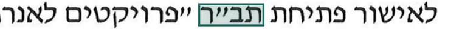
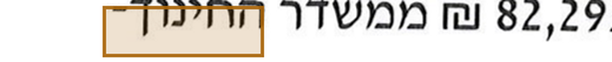
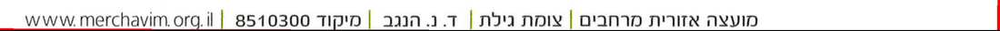
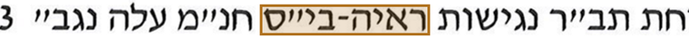
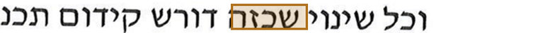
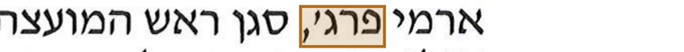

מאה וחמישים מסמכים באתר שלכם — ואף אחד מהם לא נמצא בחיפוש A hundred and fifty documents on your site — and not one of them turns up in a search
פתחו פרוטוקול מהאתר ונסו לחפש בו מילה. התוצאה תהיה אפס — גם כשהמילה מול העיניים על המסך: הקובץ הוא תמונה, לא טקסט. כך מתפרסמים פרוטוקולי המועצה מאז 2012, וכך נראים רוב הארכיונים הסרוקים בישראל. אנחנו הופכים אותם לטקסט שאפשר לחפש בו, לצטט ממנו ולבנות עליו מפתח. Open a protocol from the site and search for a word in it. The result is zero — even with the word in front of you on the screen: the file is an image, not text. Council protocols have been published this way since 2012, and most scanned archives in Israel look the same. We turn them into text you can search, quote and index.
תנו לנו פריט אחד — תיק, קלטת או תיקיית סריקות. נחזיר אותו מעובד תוך שלושה ימי עבודה, בחינם וללא התחייבות. Give us one item — a file, a tape, a folder of scans. We return it processed within three working days, free and with no commitment.
בהמשך העמוד אפשר לראות בדיוק מה מקבלים — על מסמך ציבורי אמיתי, מתחילתו ועד סופו. Further down this page you can see exactly what that looks like — on a real public document, start to finish.
הדוגמאות בעמוד: פרוטוקול מליאה 858/26 של המועצה האזורית מרחבים · חומר ציבורי · אין כאן חומר של אף לקוח Examples on this page: plenum protocol 858/26 of the Merhavim Regional Council · public material · no client material appears here
ישיבה אחת, שני סוגי חומר קשיםOne session, two hard kinds of material
כדי לא להישאר ברמת ההצהרות, לקחנו ישיבה אחת של מועצה אזורית וטיפלנו בכל מה שפורסם ממנה — גם בסריקה וגם בהקלטת הקול. שני סוגי חומר שקשה לעבוד איתם: תמונה שאין בה טקסט, ודיבור חופשי של עשרה אנשים בחדר. להלן מה שיצא, שלב אחרי שלב. Rather than stay at the level of claims, we took one regional-council session and handled everything published from it — the scan and the audio recording alike. Two kinds of material that are hard to work with: an image containing no text, and ten people talking freely in a room. Here is what came out, step by step.
קודם הסריקה. קובץ ה־PDF של הפרוטוקול הוא ארבעה צילומים. המדפסת־סורקת (Canon iR-ADV C5850) שמרה תמונה, לא טקסט: חיפוש מילה בקובץ מחזיר אפס תוצאות. כך מתפרסמים פרוטוקולי המועצה מאז 2012. The scan first. The protocol PDF is four photographs. The office copier (Canon iR-ADV C5850) saved an image, not text: searching for any word returns nothing. Council protocols have been published this way since 2012.

תוקן על פי כלל בעל שםcorrected by a named rule הועבר לבדיקת אדםsent to a human עמוד 1 מתוך 4, כפי שהמערכת הפיקה אותוpage 1 of 4, exactly as produced
להפיק טקסט מסריקה אינו הקושי — יש לכך כלים. הם פשוט אינם מספיקים: התוצאה נראית מוגמרת, אבל המכונה אינה מסמנת היכן טעתה, וחלק מהטעויות אינן ג׳יבריש אלא מילה עברית תקינה אחרת — ואז שותקים גם המילון וגם בודק האיות. במסמך הזה יש חמישה מקומות כאלה מתוך תשעה־עשר. לארכיון לא הטקסט עצמו קובע, אלא אם ידוע לאילו מקומות אין להאמין — ומי אחראי עליהם. Getting text out of a scan is not the hard part — there are tools for that. They are simply not enough: the result looks finished, but the machine does not mark where it erred, and some errors are not gibberish but a different, perfectly valid Hebrew word — at which point the dictionary and the spellchecker both stay silent. In this document there are five such places out of nineteen. For an archive what counts is not the text itself, but whether it is known which places not to trust — and who answers for them.
מכונה, הגהה של דובר עברית, ובקרה שלכםMachine, a native-speaker proofread, and your own control
אנחנו לא מוכרים אחוזים. מסמך ארכיוני נמסר מוגה, והמקומות שאינם קריאים במקור מסומנים בנפרד — זה התקן המקצועי, ולא התחמקות. האחוזים בהמשך העמוד הם רק ההוכחה שאנחנו יודעים למדוד את עצמנו. We do not sell percentages. An archival document is delivered proofread, and whatever is unreadable in the source is marked as such — that is the professional standard, not an excuse. The percentages further down the page are only the proof that we can measure ourselves.
קו הייצורThe pipeline
זיהוי, בניית מבנה וחמש בדיקות שנשענות על אמות מידה מחוץ למנוע הזיהוי. כל תיקון נרשם עם שם הכלל שהפעיל אותו, כך שאפשר לבדוק אותנו בדיעבד. Recognition, structuring and five checks resting on yardsticks outside the recognition engine. Every correction is logged with the rule that made it, so our work can be audited after the fact.
הגהה של דובר עבריתA native-speaker proofread
את המקומות המסומנים המגיה בודק ראשונים, אבל קורא את הכול — כי חלק מהשגיאות מכונה אינה יכולה לתפוס עקרונית: במקום המילה הנכונה יוצאת מילה עברית תקינה אחרת. לכן המגיה הוא דובר עברית שמכיר גם את האזור ואת שמותיו. מה שאינו קריא במקור מסומן, ולא מנוחש. ההגהה כלולה במחיר, והאחריות לתוצאה שלנו. The proofreader checks the marked places first but reads everything — because some errors a machine cannot catch in principle: instead of the right word it produces a different, perfectly valid Hebrew one. So the proofreader is a native speaker who also knows the region and its names. Whatever is unreadable in the source is marked, not guessed. Proofreading is included in the price, and the result is our responsibility.
בקרה מדגמיתSample-based control
אנחנו מציעים את נוהל הקבלה בעצמנו: כמה יחידות נבדקות, מה נחשב שגיאה ומה נחשב בלתי קריא במקור. מוסכם לפני תחילת העבודה, לא אחריה. We propose the acceptance procedure ourselves: how many units are checked, what counts as an error and what counts as unreadable in the source. Agreed before the work starts, not after.
מה נדרש מכם — כיול על החומר שלכם, פעם אחתWhat we need from you — one calibration on your own material
לא מגיה ולא כוח אדם לאורך הפרויקט. קודם אנחנו מריצים את כל המנה ומוציאים ממנה רשימה מרוכזת אחת: מונחים מקומיים, ראשי תיבות, שמות יישובים ואנשים, איות שנוי במחלוקת, וכל המקומות שבהם המערכת מתלבטת. איש שלכם עובר על הרשימה, לא על הארכיון. מה שהוא מאשר הופך לכלל שפועל על כל המנה — גם על התיקים שטרם נפתחו. Not a proofreader, and not staff time across the project. First we run the whole batch and draw one consolidated list out of it: local terms, abbreviations, names of settlements and people, contested spellings, and every place where the system hesitates. Your person goes through the list, not through the archive. What they confirm becomes a rule that applies across the entire batch — including files not yet opened.
ככל שהחומר מגוון יותר, כך הרשימה ארוכה יותר — אבל היא תמיד קצרה מהארכיון עצמו, והיא נבנית ממנו ולא מניחוש. The more varied the material, the longer that list — but it is always shorter than the archive itself, and it is built from the archive rather than guessed at.
עיבוד נתונים ודיגיטציה של מסמכיםData processing and document digitization
אני עובד בקו ייצור: זיהוי, בניית מבנה, חמש בדיקות ורשימת ספקות. בעבודות גדולות אני מצרף עוזרים. היקף של מאות תיקים אינו מרתיע, ולוח הזמנים נמדד בשבועות ולא בשנים. I work as a pipeline: recognition, structuring, five checks and a list of doubts. On large batches I bring in helpers. A few hundred files is not daunting, and the schedule is measured in weeks, not years.
דיוק בעבודה קודמתPrecision on earlier work
עבודה עבור חוקרת באוניברסיטת בר־אילן (ללא תוכן החומר, שאינו מפורסם): 231 עמודים עם סימון בכתב יד הפכו ל־436 רשומות מובנות. שלושה מעברי בדיקה, 510 קטעים הושוו למקור, 8 אי־התאמות — כולן הוסברו על ידי המהדורה שממנה צוטט. Work for a researcher at Bar-Ilan University (content withheld — it is unpublished): 231 pages of handwritten markup became 436 structured records. Three verification passes, 510 fragments compared against the source, 8 discrepancies — every one of them explained by the edition quoted.
מדדנו את עצמנו מול המסמך הרשמי שלכםWe measured ourselves against your own official document
המועצה מפרסמת לכל ישיבה שלושה קבצים: סריקה, פרוטוקול נגיש והקלטת קול. זה מאפשר דבר נדיר — לבדוק את העבודה שלנו מול המסמך הרשמי שלכם עצמכם, ולא מול הצהרה. מתוך 711 מילים בגוף המסמך נמצאו 19 מקומות שנקראו אחרת מהמסמך הרשמי; 12 מהם המערכת סימנה בעצמה עוד לפני שמישהו השווה. כולם ברשימה שלמטה — כולל שבעת המקומות שהחמצנו. The council publishes three files for every session: a scan, an accessible protocol and an audio recording. That allows something rare — checking our work against your own official document rather than against a claim. Out of 711 words in the body, 19 places were read differently from the official document; 12 of them the system marked itself before anyone compared. All of them are in the list below — including the seven we missed.
| במסמך הרשמיIn the official document | מה שקראה המכונהWhat the machine read | סימון עצמיSelf-flagged | סוגKind |
|---|---|---|---|
| פרג' | פרגי | סומןflagged | גרש בשם נקרא כאותapostrophe in a name read as a letter |
| דרום | דרוס | לא סומןmissed | אות סופית נקראה כאחרת · מילה עברית תקינהa final letter read as another · a legitimate Hebrew word |
| חג'ג' | חגיגי | סומןflagged | גרש בשם נקרא כאותapostrophe in a name read as a letter |
| תש"ז | תש"ו | לא סומןmissed | אות בודדת בקיצור שנהa single letter in a year abbreviation |
| בי"ס | ביייס | סומןflagged | גרשיים בראשי תיבותgershayim in an abbreviation |
| מיסים | מיסיס | סומןflagged | אות סופית נקראה כאחרתa final letter read as another |
| א' | אי | סומןflagged | גרש בשם נקרא כאותapostrophe in a name read as a letter |
| פרג' | פרגי | סומןflagged | גרש בשם נקרא כאותapostrophe in a name read as a letter |
| חם | חס | לא סומןmissed | אות סופית נקראה כאחרת · מילה עברית תקינהa final letter read as another · a legitimate Hebrew word |
| בי"ס | ביייס | סומןflagged | גרשיים בראשי תיבותgershayim in an abbreviation |
| החינוך | התינוך | סומןflagged | ח׳ נקראה כ־ת׳het read as tav |
| מיסים | מיסיס | סומןflagged | אות סופית נקראה כאחרתa final letter read as another |
| א' | אי | סומןflagged | גרש בשם נקרא כאותapostrophe in a name read as a letter |
| שכזה | שכוּה | סומןflagged | החלפת אותיותletters swapped |
| פיתוח | פיתות | לא סומןmissed | ח׳ נקראה כ־ת׳ · מילה עברית תקינהhet read as tav · a legitimate Hebrew word |
| חם | חס | לא סומןmissed | אות סופית נקראה כאחרת · מילה עברית תקינהa final letter read as another · a legitimate Hebrew word |
| ארמי פרג' שמעון פרץ | — | לא סומןmissed | שני שמות בגוש החתימות לא נקראו כללtwo names in the signature block not read at all |
| ראש המועצה | רא צה | סומןflagged | המילה נשברה לשתייםthe word broke in two |
| המועצה | מועצה | לא סומןmissed | ה״א הידיעה אבדה · מילה עברית תקינהthe definite article dropped · a legitimate Hebrew word |
שבעה מקומות לא סומנו. בחמישה מהם הטעות מייצרת מילה עברית תקינה — „בית חם” נקרא „בית חס”, „פיתוח” נקרא „פיתות”. המילון שותק, הצורה תקינה, הסריקה חדה: כלל לא יתפוס את זה לעולם, רק אדם שמבין את המשפט. שני הנותרים: אות אחת בקיצור שנה, ושני שמות בגוש החתימות שלא נקראו כלל. זו בדיוק הסיבה שהשלב השני הוא הגהה של דובר עברית, ולא בדיקה של המסומנים בלבד. Seven places went unflagged. In five of them the error produces a perfectly legitimate Hebrew word — "warm house" read as something else, "development" read as "pitas". The dictionary stays silent, the form is valid, the scan is sharp: no rule will ever catch this, only a person who understands the sentence. The remaining two: one letter in a year abbreviation, and two names in the signature block that were not read at all. This is precisely why step two is a native-speaker proofread, and not a check of the flagged words alone.
מה שקובע במסמך מנהלי — אם אפשר לסמוך על המספריםWhat decides an administrative document — whether the numbers can be trusted
18 דקות דיבור, מתומללות עם חותמות זמן18 minutes of speech, transcribed with timecodes
הפרוטוקול הרשמי מסכם החלטות בכ־700 מילים. ההקלטה מכילה את הדיון עצמו, והתמליל שלנו — כ־2,550 מילים ב־231 מקטעים עם חותמות זמן. הסיכום שומר מה הוחלט; התמליל שומר גם למה, ומי אמר מה. The official protocol summarises decisions in about 700 words. The recording holds the discussion itself, and our transcript comes to about 2,550 words in 231 timecoded segments. The summary keeps what was decided; the transcript also keeps why, and who said it.
בשנייה 00:20 יושב הראש פותח: „פותח את מליאת המועצה מספר 858/26”. שלושת מספרי הפרוטוקולים שנדונו בישיבה מופיעים גם בסריקה וגם בהקלטה — סורק ומיקרופון הם שני מכשירים בלתי תלויים, ולטעות באותה טעות הם לא יכולים. At 00:20 the chair opens: "opening council plenum number 858/26". The three protocol numbers handled in the session appear in the scan and in the recording alike — a scanner and a microphone are independent instruments, and they cannot make the same mistake.
70 דקות לפרוטוקול — כתוב בקבצים שלכם70 minutes per protocol — recorded in your own files
לא הערכנו ולא ניחשנו: מאפייני הקבצים הרשמיים עצמם מראים 70 דקות עריכה לפרוטוקול אחד ו־73 לשני. שתים־עשרה ישיבות בשנה — יותר משעת עובד על כל פרוטוקול נגיש. No estimate and no guess: the properties of the official files themselves show 70 minutes of editing for one protocol and 73 for another. Twelve sessions a year — over an hour of staff time for every accessible protocol.
לדיוק: אלו 70 דקות של הפקת הגרסה הנגישה מתוך פרוטוקול כתוב, לא תמלול מאפס. To be precise: those 70 minutes are producing the accessible version from an already written protocol, not transcribing from scratch.
ההצעה: תיק אחד, בחינםThe offer: one file, free
תנו לנו פריט אחד מהארכיון שלכם — תיק, קלטת או תיקיית סריקות. נחזיר אותו מעובד תוך שלושה ימי עבודה, ללא תשלום וללא התחייבות, יחד עם רשימת המקומות שנשארו לבדיקת אדם. Give us one item from your archive — a file, a tape, a folder of scans. We return it processed within three working days, free and with no commitment, together with the list of places left for human review.
אני בישראל, בנגב, ואפשר להגיע לפגישה. העיבוד רץ במחשב מקומי; חומר של לקוח אינו עולה לשירותי ענן ונמחק לפי דרישה. נספח הגנת מידע נשלח לפי בקשה. I am in Israel, in the Negev, and can come in person. Processing runs on a local machine; client material is not uploaded to cloud services and is deleted on request. A data-protection annex is available on request.
איך זה עשוי — הפרטים הטכנייםHow it is built — the technical detail
מכאן והלאה זה כבר בית המלאכה: למה ציון ביטחון אינו עדות, אילו חמש בדיקות רצות על הטקסט, ולמה החלטנו לא לתקן לפי רוב. אין כאן הבטחות — רק מה שנמדד ואיך. From here on this is the workshop: why a confidence score is not evidence, which five checks run over the text, and why we decided not to correct by majority. No promises here — only what was measured and how.
ביטחון גבוה אינו אומר נכוןHigh confidence does not mean correct
מנוע הזיהוי נותן ציון לכל מילה. הציון אומר „ראיתי בבירור”, ולא „קראתי נכון”. שגיאה שיטתית חוזרת על עצמה בעקביות ובציון גבוה, ולפי כל סימן פנימי היא נראית אמינה. מערכת שנשענת על הציון בלבד שותקת בדיוק במקומות המסוכנים. The engine scores every word. The score says "I saw this clearly", not "I read this correctly". A systematic error repeats consistently and with a high score, and by every internal sign it looks trustworthy. A system that relies on the score alone stays silent exactly where it matters.

קיצור תקציבי שבו הגרשיים נקראו כשתי אותיות יו״ד. חוזר שתים־עשרה פעמים בציון ממוצע 92 — ולא היה מסומן לעולם. נתפס בבדיקת מורפולוגיה מול מילון עברי. A budget abbreviation whose quotation mark was read as two yods. It repeats twelve times at an average score of 92 — and would never have been flagged. Caught by a morphology check against a Hebrew dictionary.
המילה „החלטה” נקראה בצורה שגויה תשע פעמים, בציון גבוה. כאן ההכרעה באה מהמבנה: זו נוסחה קבועה שחוזרת אחרי כל סעיף בפרוטוקול. The word for "decision" was misread nine times, at a high score. Here the structure decides: it is a fixed formula that follows every item in a protocol.

אות סופית באמצע מילה — צורה שאינה קיימת בעברית. הציון 90, כלומר הסריקה ברורה; מה שנשבר הוא המילה, לא התמונה. לכן היא עוברת לאדם ולא מתוקנת בניחוש. A final-form letter in the middle of a word — a shape Hebrew does not allow. Score 90: the scan is clear, it is the word that is broken. So it goes to a human rather than being guessed at.
למה לא הכרענו לפי רובWhy we did not decide by majority
אפשר היה לתקן לפי הצורה שחוזרת הכי הרבה במסמך. בדקנו — ובשלושה מקרים מתוך שלושה הרוב היה בוחר דווקא בשגיאה, כי הצורה השגויה חזרה יציב ובציון גבוה יותר מהנכונה. לכן ההכרעה נשענת על אמת מידה חיצונית — מילון, תבנית, רצף מספרים — ולא על הסטטיסטיקה של המנוע על עצמו. We could have corrected by whichever form repeats most in the document. We tested it — and in three cases out of three the majority would have picked the error, because the wrong form repeated more consistently and at a higher score than the right one. So decisions rest on an external yardstick — a dictionary, a format, a number sequence — never on the engine's own statistics.
חמש בדיקות במקום אחתFive checks instead of one
אחרי שהטקסט כולו קיים, אפשר לשאול שאלות שאי אפשר לשאול על מילה בודדת. כל בדיקה נשענת על משהו שניתן לאמת מחוץ למנוע הזיהוי, וכל תיקון נרשם עם שם הכלל שהפעיל אותו. Once the whole text exists, questions can be asked that a single word cannot answer. Each check rests on something verifiable outside the recognition engine, and every correction is logged with the name of the rule that made it.
| בדיקהCheck | על מה היא נשענתWhat it rests on | תיקוניםFixes |
|---|---|---|
| גיאומטריית השורהLine geometry | סדר הקריאה מהקואורדינטות, לא מסדר הבלוקיםreading order from coordinates, not block order | תנאי לשארenables the rest |
| שפת האזורScript of the zone | טקסט לטיני נקרא במודל לטיניLatin text is read by a Latin model | 1 |
| תבניתFormat | כתובת אתר, מיקוד, סכום, תאריך, מספר תכניתweb address, postcode, sum, date, plan number | אימותverification |
| מבנהStructure | רצף מספור הסעיפים, נוסחאות קבועות של פרוטוקולagenda numbering sequence, fixed protocol formulas | 17 |
| מורפולוגיהMorphology | אותיות סופיות וגרשיים, מול מילון עבריfinal letters and gershayim, against a Hebrew dictionary | 43 |
סך הכול 61 תיקונים. 49 מהם מאומתים ישירות מול המסמך הרשמי של המועצה, ואף תיקון לא הרע את התוצאה. היתר נוגעים למספור הסעיפים, שאותו אי אפשר לאמת מול המסמך הרשמי כלל: שם הוא ממוספר אוטומטית והמספרים אינם חלק מהטקסט. Sixty-one corrections in all. Forty-nine are verified directly against the council's official document, and not one correction made the result worse. The rest concern agenda numbering, which the official document cannot verify at all: there it is numbered automatically and the numbers are not part of the text.
דוגמה: שורת הכותרת התחתונהExample: the footer line

השורה הזאת יצאה כג׳יבריש עברי, ושלוש מילים בה קיבלו ציון 0, 6 ו־27 — לא מפני שהיא מטושטשת, אלא מפני שהיא כתובה באותיות לטיניות ונקראה במודל עברי. מעבר אחד במודל לטיני מחזיר אותה במלואה: www.merchavim.org.il · מיקוד 8510300. אותה שורה חוזרת בארבעת העמודים, כך שהיא מאומתת ארבע פעמים. This line came out as Hebrew gibberish, three of its words scoring 0, 6 and 27 — not because it is blurred, but because it is written in Latin letters and was read by a Hebrew model. One pass with a Latin model returns it in full: www.merchavim.org.il · postcode 8510300. The same line repeats on all four pages, so it is verified four times over.
17 מילים מסומנות למגיה — ולמה דווקא הן17 words marked for the proofreader — and why those
המגיה אינו קורא 711 מילים באותה תשומת לב. 17 מילים — 2.4% מהמסמך — מסומנות לפניו מראש, כל אחת עם הנימוק שלה וגזיר מהתמונה המקורית. רובן קיבלו ציון ביטחון גבוה, כלומר הן בדיוק מה שמערכת המסתמכת על ציון הייתה מפספסת. בכוונה מסמנים יותר מדי ולא פחות מדי: החמצה עולה באמון, מילה מיותרת עולה שניות. A proofreader does not read 711 words with equal attention. Seventeen words — 2.4% of the document — are marked in advance, each with its reason and a cutout of the original image. Most carry a high confidence score, meaning they are exactly what a score-based system would miss. We deliberately mark too many rather than too few: a miss costs trust, an extra word costs seconds.

יו״ד משולשת בתוך קיצור — צירוף שאינו קיים. ברור בסריקה, שבור כמילה.A tripled yod inside an abbreviation — a combination that does not exist. Clear in the scan, broken as a word.
מילה המסתיימת באות שאינה סופית, ואין לה חלופה במילון. המכונה לא מנחשת — היא מעבירה הלאה.A word ending in a non-final letter, with no dictionary alternative. The machine does not guess — it hands it on.

סימן ניקוד בתוך טקסט שאינו מנוקד — וכאן גם הסריקה עצמה מטושטשת. שני הסימנים מצביעים לאותו כיוון.A vowel mark inside unvocalised text — and here the scan itself is blurred too. Both signals point the same way.
אות סופית באמצע מילה. המסוכן מכולם: הציון גבוה, הצורה בלתי אפשרית.A final-form letter mid-word. The most dangerous kind: high score, impossible shape.

גרש בשם משפחה נקרא כיו״ד, והתוצאה היא מילה עברית תקינה לגמרי — מילון לא יעזור כאן. שמות אינם נבדקים במילון, ולכן רשימת המשתתפים כולה עוברת תחת עין אדם. שם משפחה שאושר פעם אחת בכותרת עובד מכאן והלאה על כל המסמך. An apostrophe in a surname read as a yod, producing a perfectly valid Hebrew word — a dictionary is no help here. Names are not dictionary-checked, so the whole participant list goes under a human eye. A surname confirmed once in the header then works across the rest of the document by itself.
חמישה מקומות במסמך הזה לא ניתנים לתפיסה בשום כלל אוטומטי: שם השגיאה יוצרת מילה עברית תקינה אחרת. בדיוק בשבילם קיים שלב ההגהה — ובשבילם חשוב שאדם יעבור על הטקסט כולו, ולא רק על המסומן. Five places in this document cannot be caught by any automatic rule: there the error produces a different, perfectly valid Hebrew word. That is exactly what the proofreading stage is for — and why a person goes over the whole text, not only the marked parts.
שני מכשירים שונים, אותם מזהיםTwo different instruments, the same identifiers
הסורק והמיקרופון הם מקורות בלתי תלויים. כשמזהה מופיע בשניהם, זו אינה השערה. שלושת מספרי הפרוטוקולים שנדונו בישיבה מופיעים גם בסריקה וגם בהקלטה. The scanner and the microphone are independent sources. When an identifier appears in both, it is not a guess. The three protocol numbers handled in the session appear in the scan and in the recording alike.
| מזההIdentifier | בסריקהIn the scan | בהקלטהIn the recording | משמעותMeaning |
|---|---|---|---|
| 858/26 | ✓ | ✓ | מספר הישיבהsession number |
| 856/26 | ✓ | ✓ | סעיף ראשון בסדר היוםfirst agenda item |
| 857/26 | ✓ | ✓ | סעיף ראשון בסדר היוםfirst agenda item |
| 2025 / 2026 / 2027 | ✓ | ✓ | שנות תקציב וצו מיסיםbudget and tax-order years |